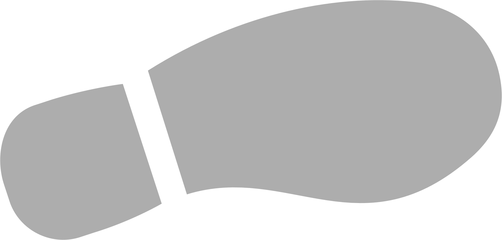

Roadmap
안녕하십니까. 개발자를 꿈꾸는 남윤지입니다.
아직은 발돋움 단계이지만, 꾸준한 노력과 열정으로
발돋움에서 한걸음씩 나아가고, 그것이 도약이 되어
훗날에는 새처럼 자유롭게 비행하는
훌륭한 개발자가 될 것입니다.
차근차근 익히는 시간
현재 스마트 콘텐츠 융합
응용 SW 엔지니어 양성
과정을 수강중이며
한 언어씩 차근히 익히며
열심히 공부중입니다.
신입개발자로의 첫시작
신입개발자로서 첫발을
내딛었습니다.
배워야 할 것도 많지만
실무에 오니 설레는 마음
이 더 큰 것 같습니다.
꾸준한 개인공부
업무에 적응을 하고
있습니다. 그럼에도,
개인공부를 게을리하지
않고 더 나은 개발자가
되기 위해 노력중입니다.
개인 웹앱 개발
10년을 실무에서 갈고
닦은 실력으로 취미삼아
웹앱을 개발해보는 것이
목표입니다.
2021
2022
2025
2031
